Viterbi算法介绍¶
Viterbi算法原理¶
- 如下图，假如你从S和E之间找一条最短的路径，除了遍历完所有路径，还有什么更好的方法？
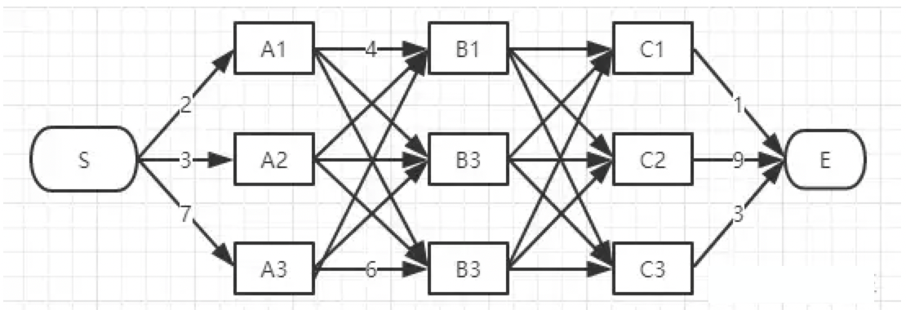
- viterbi维特比算法解决的是篱笆型的图的最短路径问题，图的节点按列组织，每列的节点数量可以不一样，每一列的节点只能和相邻列的节点相连，不能跨列相连，节点之间有着不同的距离，距离的值就不在图上一一标注出来了，大家自行脑补.
-
viterbi维特比算法过程非常简单：
- 为了找出S到E之间的最短路径，我们先从S开始从左到右一列一列地来看。
- 首先起点是S，从S到A列的路径有三种可能：S-A1、S-A2、S-A3，如下图：
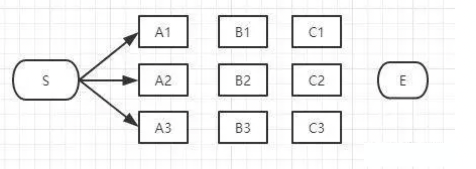
- 我们不能武断地说S-A1、S-A2、S-A3中的哪一段必定是全局最短路径中的一部分，目前为止任何一段都有可能是全局最短路径的备选项。
- 我们继续往右看，到了B列。按B列的B1、B2、B3逐个分析。
-
先看B1：
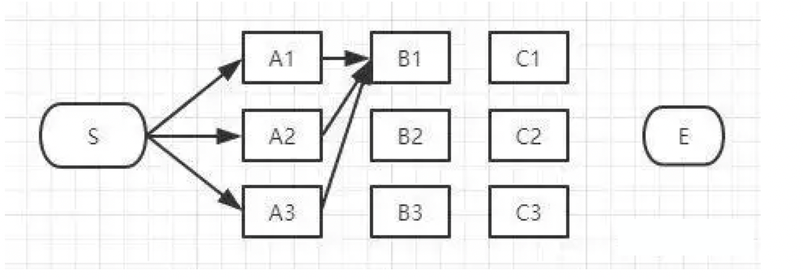
- 如上图，经过B1的所有路径只有3条：
- S-A1-B1
- S-A2-B1
- S-A3-B1
- 以上这三条路径，各节点距离加起来对比一下，我们就可以知道其中哪一条是最短的。假设S-A3-B1是最短的，那么我们就知道了经过B1的所有路径当中S-A3-B1是最短的，其它两条路径路径S-A1-B1和S-A2-B1都比S-A3-B1长，绝对不是目标答案，可以大胆地删掉了。删掉了不可能是答案的路径，就是viterbi算法（维特比算法）的重点，因为后面我们再也不用考虑这些被删掉的路径了。现在经过B1的所有路径只剩一条路径了，如下图：
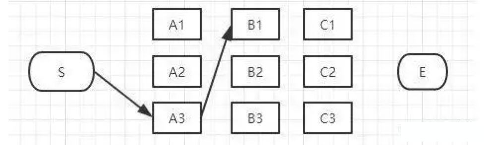
-
接下来，我们继续看B2：
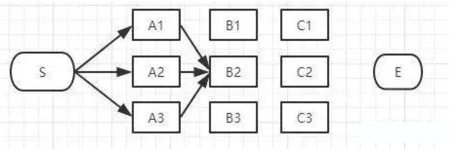
- 同理，如上图，经过B2的路径有3条：
- S-A1-B2
- S-A2-B2
- S-A3-B2
-
这三条路径中，各节点距离加起来对比一下，我们肯定也可以知道其中哪一条是最短的，假设S-A1-B2是最短的，那么我们就知道了经过B2的所有路径当中S-A1-B2是最短的，其它两条路径路径S-A2-B2和S-A3-B1也可以删掉了。经过B2所有路径只剩一条，如下图：
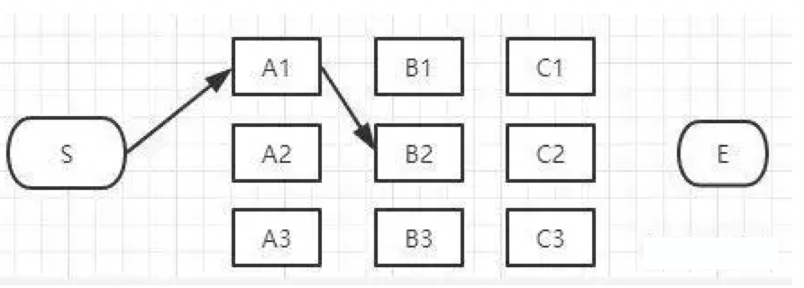
-
接下来我们继续看B3：
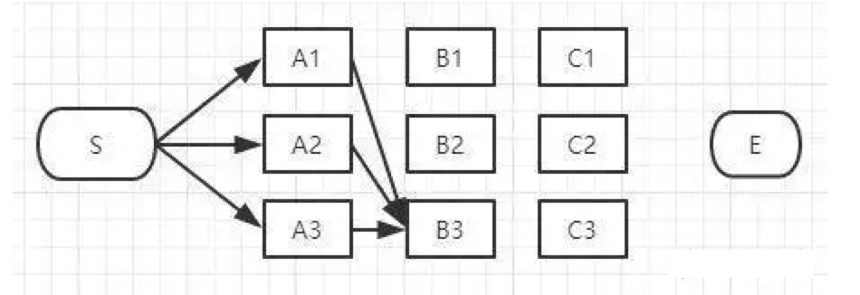
- 同理，如上图，经过B3的路径也有3条：
- S-A1-B3
- S-A2-B3
- S-A3-B3
-
这三条路径中我们也肯定可以算出其中哪一条是最短的，假设S-A2-B3是最短的，那么我们就知道了经过B3的所有路径当中S-A2-B3是最短的，其它两条路径路径S-A1-B3和S-A3-B3也可以删掉了。经过B3的所有路径只剩一条，如下图：
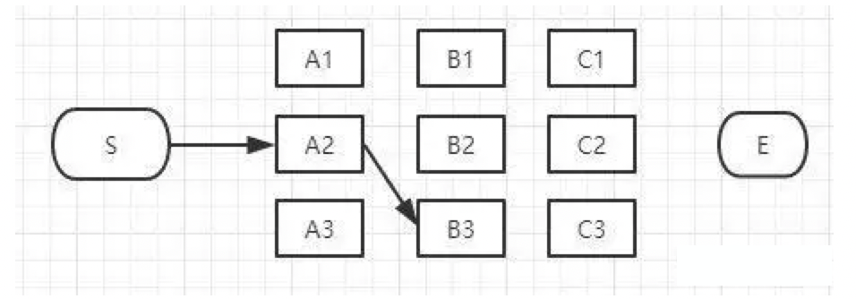
- 现在对于B列的所有节点我们都过了一遍，B列的每个节点我们都删除了一些不可能是答案的路径，看看我们剩下哪些备选的最短路径，如下图：
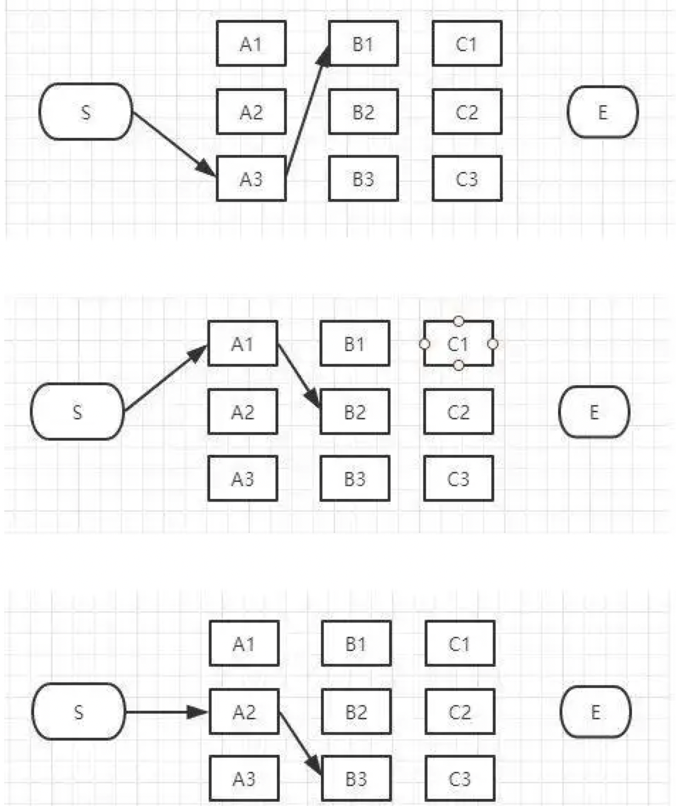
-
上图是我们删掉了其它不可能是最短路径的情况，留下了三个有可能是最短的路径：S-A3-B1、S-A1-B2、S-A2-B3。现在我们将这三条备选的路径放在一起汇总到下图：
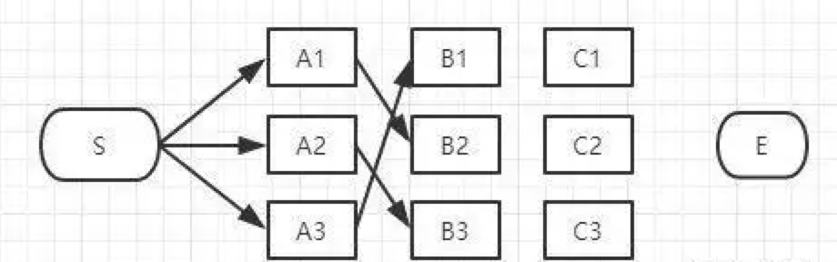
- S-A3-B1、S-A1-B2、S-A2-B3都有可能是全局的最短路径的备选路径，我们还没有足够的信息判断哪一条一定是全局最短路径的子路径。
- 接下来讲到C列了，类似上面说的B列，我们从C1、C2、C3一个个节点分析。
-
经过C1节点的路径有:
- S-A3-B1-C1、S-A1-B2-C1、S-A2-B3-C1
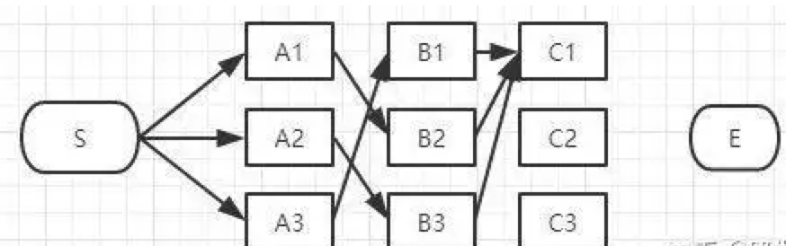
-
和B列的做法一样，从这三条路径中找到最短的那条（假定是S-A3-B1-C1），其它两条路径同样道理可以删掉了。那么经过C1的所有路径只剩一条，如下图：
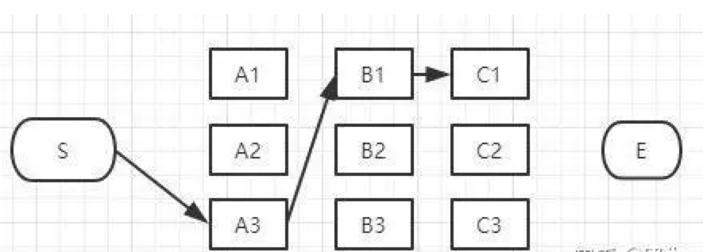
-
同理，我们可以找到经过C2和C3节点的最短路径，汇总一下：
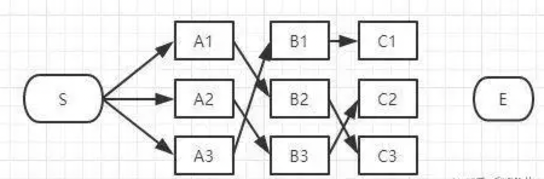
- 到达C列时最终也只剩3条备选的最短路径，我们仍然没有足够信息断定哪条才是全局最短。最后，我们继续看E节点，才能得出最后的结论。
- 到E的路径也只有3种可能性：
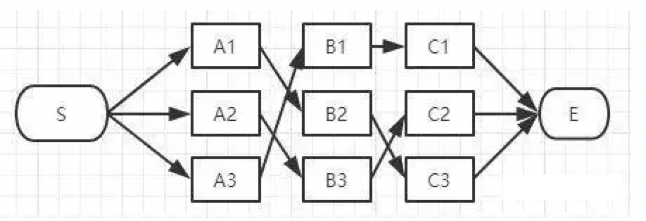
-
E点已经是终点了，我们稍微对比一下这三条路径的总长度就能知道哪条是最短路径了。
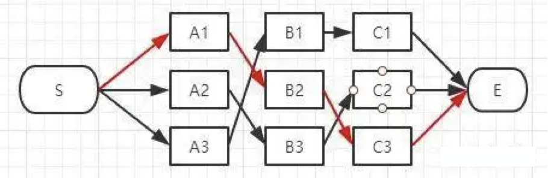
- 在效率方面相对于粗暴地遍历所有路径，viterbi 维特比算法到达每一列的时候都会删除不符合最短路径要求的路径，大大降低时间复杂度。
Viterbi vs 前向算法¶
- 前向算法
- 目的：计算给定观测序列的出现概率。
- 过程：通过动态规划的方法，逐步计算每个时刻每个状态的概率，并将这些概率累加，以得到最终的观测序列概率。
- 特点：关注所有可能的状态路径，计算的是所有路径的总和。
- Viterbi算法
- 目的：寻找给定观测序列下最可能的状态序列。
- 过程：同样使用动态规划，但在每一步中只保留最优路径（即最大概率路径），而不是所有路径的总和。
- 特点：关注最优路径，计算的是最大值，而非总和。